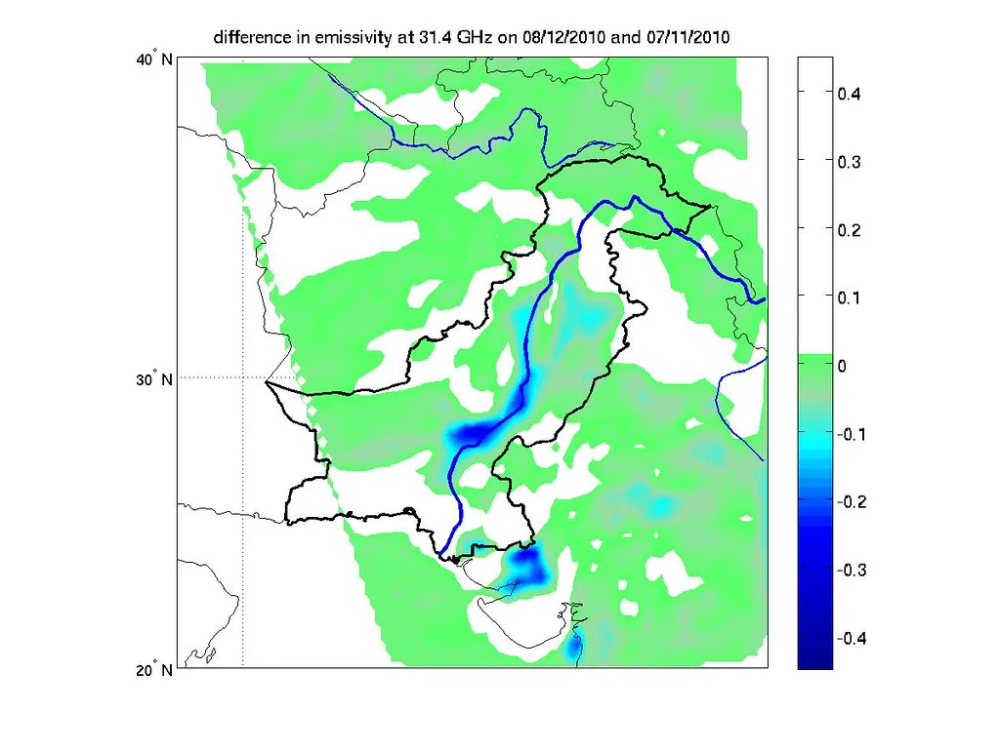
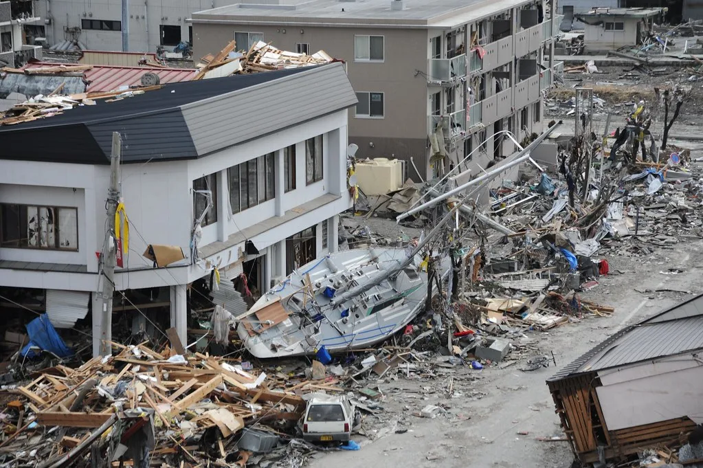

네팔 대홍수 사망 1천명 넘어…한국 긴급구호대 44명 카트만두 도착
지난달 26일 네팔 중북부와 인접한 중국 티베트 지역을 덮친 대규모 홍수·산사태로 인한 사망자가 1000명을 넘어섰다. 현지 당국과 외신을 종합하면 네팔에서만 1000명 이상, 중국 쪽에서도 십수 명이 숨졌고, 실종자는 수천 명 규모로 집계되고 있다. 몬순 폭우가 짧은 시간에 집중되면서 강이 범람하고 산비탈이 무너져 마을과 도로가 통째로 쓸려 나갔고, 곳곳에서 통신과 전기가 끊겼다.
한국 정부는 네팔 정부의 요청을 받아 지난 1일 해외긴급구호대(KDRT) 파견을 결정했다. 구호대는 이규호 외교부 개발협력국장을 대장으로 외교부 인력과 한국국제협력단(KOICA), 소방청 구조대원 등 44명으로 꾸려졌다. 이들은 공군 다목적 공중급유수송기 KC-330을 타고 2일 오전 네팔 수도 카트만두의 트리부반 국제공항에 도착했으며, 이르면 3일부터 현장에 투입될 예정이다.

구호대는 인명 탐지견 5마리와 함께 고해상도 촬영이 가능한 무인기(드론), 매몰자 음향·영상 탐지기, 열화상 탐지기 등 각종 첨단 장비를 갖고 들어갔다. 앞서 파견된 외교부 신속대응팀과 협의해 수색·구조 활동을 벌이며, 활동 기간은 약 10일로 잡혀 있다. 필요할 경우 네팔 당국의 요청에 따라 기간이 연장될 수 있다.
구호대의 우선 임무는 이번 홍수 이후 연락이 끊긴 한국인 9명을 찾는 것이다. 앞서 현지에 고립됐던 다른 한국인들은 대피를 마친 것으로 파악됐으나, 실종 상태인 이들의 안전은 아직 확인되지 않았다. 구호대는 네팔 구조당국, 현지 한인사회와 협력해 실종자의 마지막 이동 경로를 중심으로 수색 범위를 좁혀 나갈 계획이다. 홍수가 발생한 지 일주일이 넘어 시간이 지날수록 생존 가능성이 낮아지는 만큼, 수색 초기 단계에서 최대한 넓은 지역을 훑는 것이 관건이다.
이번 재해는 네팔뿐 아니라 남아시아 전역에 걸친 이례적인 몬순 피해의 일부다. 인도 북부와 파키스탄에서도 같은 시기 폭우로 큰 인명 피해가 났고, 기후변화로 강수의 강도가 세지면서 산악 국가의 홍수·산사태 위험이 갈수록 커지고 있다는 분석이 나온다. 네팔은 국토 대부분이 급경사 지형이어서 한번 비가 집중되면 피해가 순식간에 확산된다.

네팔 정부는 자체 구조 역량만으로는 피해 수습이 어렵다고 보고 국제사회에 지원을 요청했고, 한국을 비롯한 여러 나라가 구호 인력과 물자를 보내고 있다. 다만 히말라야 산악 지형과 계속되는 우기, 무너진 도로 탓에 구조대의 접근 자체가 쉽지 않은 상황이다. 여진처럼 이어지는 추가 산사태 위험도 수색을 더디게 만드는 요인으로 꼽힌다.
외교부는 카트만두 현지에 신속대응팀을 계속 두고 교민 안전을 점검하는 한편, 상황이 악화하면 추가 파견도 검토하기로 했다. 네팔에는 관광과 사업, 봉사활동 등으로 한국인의 왕래가 잦은 만큼 재외국민 보호가 중요한 과제로 꼽힌다. 한국은 2023년 튀르키예 지진 등 대형 재난 때마다 긴급구호대를 보내 수색·구조와 의료 지원을 해 왔으며, 이번 파견도 그 연장선에 있다. 정부는 실종 한국인의 소재 파악과 함께 네팔의 재해 복구를 위한 인도적 지원 방안도 함께 논의하고 있다.